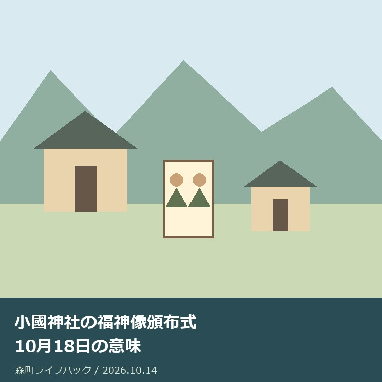

社寺・文化・建築
小國神社の福神像頒布式｜10月18日の意味

Q. 福神像頒布式は何をする日？神札はどう受ける？
A. 小國神社は10月18日の月次祭に併せて福神像頒布式を行うと案内しています。大国さまと恵比寿さまを刷った福神像神札を、氏子内の世話人を通して家庭へ届ける祭典です。2026年10月14日確認時点では時刻・初穂料・氏子外の受け方は未確認です。神社へ受け方を確かめてから予定を決めてください。
家庭に届く神札から祭典を知る
小國神社の福神像頒布式は、境内で完結する出来事として読むだけでは、役割の一部を見落とします。公式の10月案内は、神札を氏子内の世話人を通して家庭へ届けると説明しています。祈りを支える人の時間と手間が、家の中へつながる行事です。受ける側も、その道筋を先に知っておきたいと思います。
神事を続けてきた神社と地域の方には、見えにくい準備があります。私は、その負担を無視して「秋だから見に行こう」とだけ書きたくありません。森町の外から関わる者として、まず公式に分かる意味を整理します。その上で、受けたいご家族が何を確認すればよいかを、暮らしの段取りとして考えます。
大石浩之（磐田市／不動産業）です。私は、神札の受け渡しを神社に代わって案内する立場ではありません。不動産の仕事から見えるのは、家を引き継ぐと連絡先や家族の役割も引き継ぐ必要があるという点です。この記事では実際の受け取り体験を語らず、公式資料と私の考えを分けます。
事実整理｜10月18日と隣の日を分ける
小國神社公式サイトの「10月の神事」は、18日の月次祭に併せて福神像頒布式を行うと説明しています。公式の「祭典・神事」の十月欄にも両方の名称があります。2026年10月14日に二つの掲載を照合しました。年中行事の掲載日程であり、2026年だけの変更告知として扱う情報ではありません。
小國神社の祭典暦は、10月17日の神嘗祭遙拝式・神嘗祭奉祝祭を別に掲載しています。17日と18日は隣接しますが、神事名と意味を一括りにはできません。手帳には「小國神社の秋の行事」とだけ書かず、10月18日、福神像頒布式、確認した公式URLを一緒に残すと照合しやすくなります。
福神像神札には、大国さまと恵比寿さまの神像が刷られていると小國神社は説明します。福神像という名称から立体の像を受けると想像する方もいるかもしれません。しかし公式本文が案内するのは神像を刷った神札です。受ける物の説明を確かめることが、行事名を知る次の一歩になります。
小國神社の公式紹介では、御祭神は大己貴命で、別名を大国様と説明しています。神札に二柱の神像が刷られる説明と、神社の御祭神の紹介は、それぞれの文脈で読みます。恵比寿さまも描かれるという事実だけから、神社の御祭神の説明を独自に書き換えることはしません。
神札は氏子内の世話人を通して各家庭へ届けると記されています。氏子地域以外にも全国から受ける方がいるとの説明があります。ただし全国という記載は、郵送受付や通販の具体的手順を示すものではありません。遠方から受けたい場合は、申込み方法が分かったと判断せず、神社に確認する必要があります。
神事名と日程を分けて読む方法は、秋分の日の小國神社でも扱いました。今回の対象と混同せず、関心の近い部分を読み合わせられます。
神札が届く道筋と家の連絡先
福神像神札の頒布には、神社と家庭をつなぐ世話人の役割が公式に示されています。祭典の日付だけを知っていても、家庭への連絡や受け渡しの事情までは分かりません。私は、受けたい側の予定を先に固めるより、誰に何を尋ねるかを整理する方が、担う人の時間を尊重できると考えます。
世話人の人数、担当区域、配布する日時、訪問の回数は、参照した公式案内では確認していません。森町全体で同じ受け渡し方があるとも書けません。ご実家に残る過去の記録があっても、現在の手順の保証にはなりません。地区や家庭の事情を自分の経験で埋めず、現行の連絡先に戻る姿勢が要ります。
家族が転居した場合、日中に家にいる人や、地域からの連絡を受ける人が変わります。これは公式の頒布条件ではなく、私が考える家庭側の確認事項です。神札を受けたい意思、連絡を受けられる家族、問い合わせをする人を分けておけば、複数人が別々に同じ質問をする行き違いを減らせます。
住まなくなった実家へ神札が届いていた記憶があっても、留守宅に置いてもらえるとは判断できません。空き家に入る許可や鍵の扱いを、頒布の話と混ぜないことです。受ける場所を変えられるかも未確認です。家の利用状態と希望を伝え、受け渡しに関して神社側から案内された範囲を記録します。
信仰への関わり方は家族によって違います。私が勧めるのは、全員を同じ考えにそろえることではありません。受ける意思のある人を確認し、受け方が分からない部分だけ質問する方法です。家を引き継いだという理由だけで、以前の家族と同じ関わり方を自動的に求める書き方は避けたいと考えます。
良い点｜届ける人まで説明されている
小國神社の10月案内の良い点は、福神像神札の内容と、家庭へ届ける人の存在を一緒に説明していることです。行事の名称だけでは見えない地域との接点が分かります。私は、訪ねる側が境内の風景だけで文化を判断せず、日々の暮らしへつなぐ人に目を向けられる説明だと評価します。
公式トップの月別説明と祭典暦を合わせて読める点も、利用する側には助かります。月別説明で神札の意味を知り、祭典暦で日付と隣接する神事を区別できます。短い紹介を一つ読むだけより、誤った行事名で問い合わせる可能性を減らせます。二つのページは役割を分けて使えます。
氏子地域以外からも受ける方がいるとの記載は、町外の読者にも確認の入口を開きます。地域内だけのものと決めつけずに済むからです。私は、関心を持つ人の範囲を示しながら、細かな受け方は神社に戻して確認する読み方を勧めます。説明されている範囲を越えずに関われるのが利点です。
神札を受けることと祭典を拝観することは、同じ目的ではありません。公式説明を読むと、自分が知りたいのは神札の受け方なのか、式の日程なのかを分けられます。家族の移動を手配する前に目的が決まれば、質問を絞れます。私は、その小さな整理こそ、案内を読む実用的な価値だと思います。
関連する材料として、小國神社・天宮神社の舞楽の記事があります。調べる対象と、資料が答えられる範囲を分けると、家族の記録にも根拠を残せます。
注文したい点｜受ける前に知りたい条件
福神像頒布式の案内について、開始時刻、福神像神札の初穂料、氏子外の具体的な受け方は、2026年10月14日に参照した二つのページでは確認できませんでした。一般参列の条件も確定していません。掲載がないという事実を、無料、予約不要、当日どこでも受け取れるという答えへ置き換えないでください。
私は、頒布の問い合わせ先と、事前に伝える事項が一つの場所で読めると助かると考えます。これは神社側の事情を知らずに運営を批判する話ではありません。担い手が説明を繰り返す負担と、ご家族が移動をやり直す負担の両方を減らすため、利用する側から望む情報の形です。
全国から受ける方がいると聞くと、遠方のご家族は郵送を期待するかもしれません。しかし掲載本文には申込書や送付方法が示されていません。問い合わせでは、住む地域、神札を受けたいこと、現地へ行けるかを短く伝えます。神社が案内していない受け方を、この記事から選択肢として保証することはできません。
私は、当日の訪問まで勧めるか迷いました。秋の森町を訪ねるきっかけにはなりますが、時刻も拝観条件も未確認のまま移動を促すと、読者にも神社にも無理が生じます。この記事の結論は、まず神札の意味を知り、受け方を確認することです。予定を決めるのは、その答えを得てからで構いません。
対案・結論｜今日の電話は一つの目的で
福神像神札を受けたいご家族が今日できることは、神社へ「福神像神札を受けたいが、私の住む地域ではどうすればよいか」と確認することです。小國神社の公式掲載電話は0538-89-7302です。所在地は静岡県周智郡森町一宮3956-1です。電話では式の拝観の希望と神札の希望を分けます。
問い合わせる前には、公式の10月案内と祭典暦の十月欄を開きます。神札の名前と日程を確かめ、分かっていない事項だけを手元に残します。開始時刻を知りたいのか、初穂料を知りたいのか、氏子外の受け方を知りたいのか。質問の目的が一つなら、回答を家族へ伝えるときにも混線しにくくなります。
回答を受けたら、対応した日、確認した内容、まだ分からない内容を分けて記録します。氏子内で世話人への確認が必要と案内された場合も、神社から示された範囲を越えて連絡先を公開しません。個人の電話番号を家族の共有メモに残すときは、必要な家族だけが見られる方法を選ぶのがよいと考えます。
費用が分かってから、移動の負担と一緒に家族で考えます。この記事は初穂料の金額を確認できていないため、仮の金額を予算表へ入れません。現地で受ける必要があるのかも未確認です。受け方の答えが先、交通手段の手配が後。この順序なら、分からない条件を埋めるために何度も出掛けずに済みます。
参列や受け取りを今回は見送る選択も残ります。公式説明を読むだけで、神札が家庭へ届く仕組みを知ることはできます。世話人の仕事を知ったことを、すぐに自分も役を引き受ける義務へ変えないでください。私は、事情に合わせて関わる範囲を選び、その範囲で約束を守る方が無理なく続くと考えます。
家族に残す記録｜神事と建物を混同しない
福神像頒布式の記録は、行事名、10月18日という公式掲載日程、2026年10月14日の確認日、公式URLを組にして残します。神札そのものの情報と、参列・受け取りの条件は別欄にします。写真だけを家族へ送ると、どの年に何を確かめたかが消えます。日付の入った短いメモを添える方法が使えます。
ご実家に古い神札や冊子がある場合、誰がいつ受けたものか分かる範囲で記録します。祀り方や納め方を独自に決める資料としては使いません。現在の取り扱いは神社へ確認する話です。家の整理で見つかった物を、不要品と即断せず、家族の意思と確認先を一緒に残すのが私の考える段取りです。
森町公式の「森町の神社建築」は、町内の社殿を建築の歴史から扱っています。小國神社の福神像頒布式を説明する資料ではありません。行事の意味は神社公式、建物の歴史は町の歴史資料と、出典の役割を分けます。文化をまとめて紹介する場面ほど、一つの資料に別の答えを期待しない配慮が要ります。
森町公式の「文化財」には、小國神社十二段舞楽を含む地域の文化財が掲載されています。福神像頒布式の神札の説明と、舞楽の指定情報は別の話です。私は、同じ神社に関わるからといって、すべてを同じ文化財の説明に寄せません。神事名、建築、指定された対象を分けると、家族の記録の精度が上がります。
調べる対象を広げる場合は、森町の神社建築も参考になります。資料が扱う年代や範囲を読み、この記事の未確認事項を推測で埋めないよう、それぞれの公式出典へ戻って確かめてください。
大石の視点｜家へ届く前の手間を見る
私は、文化の継承を語る前に、誰がいつ動くかを見たいと考えます。福神像神札が家庭へ届くまでに世話人が関わると知れば、受ける側にも準備できることがあります。これは私の意見であり、頒布に立ち会った実話ではありません。公式に示された役割から、家庭の連絡と予定を先に整える意味を考えています。
制度や行事は、名前を知っただけでは使える段階に達しません。受け方を一つ確かめるだけで十分です。私はそう言い切ります。暮らしの段取りを一度に完成させようとせず、神札の希望と確認先を家族でそろえることから始める。その小さな行動なら、文化を担う人へ追加の混乱を持ち込まずに済みます。
家や土地に関わる仕事でも、先に希望を決めてから条件を押し込むと、後から手戻りが生じます。神事を不動産の手続きと同じものとは考えませんが、確認できた事実を土台に予定を組む姿勢は共通します。森町への愛着を持つからこそ、担い手の働きと家族の実行できる範囲を、両方見ておきたいのです。
10月18日の意味を知る今日の一歩は、神札と世話人の役割を公式の10月案内で確かめることです。受けたい場合は、神社へ受け方を尋ねます。確定していない時刻や費用は空欄のまま残してください。未確認の条件を残しておく方が、次に家族が予定を決める際に、確かめるべき場所を見失わずに済みます。
よくある質問
福神像頒布式は2026年だけの行事ですか？
小國神社公式の祭典・神事では、十月の年中行事として18日の月次祭と福神像頒布式を掲載しています。2026年10月14日に確認しましたが、2026年限定の新設や変更告知ではありません。開始時刻や参列条件は参照した案内では未確認です。実際に訪ねる場合は神社へ当日の案内を確認してください。
氏子地域の外でも福神像神札を受けられますか？
小國神社の10月案内は、氏子地域以外にも全国から受ける方がいると説明しています。ただし氏子外の申込手順や郵送の可否は掲載本文では確認できませんでした。自分の居住地域と神札を受けたい希望を神社へ伝え、案内された方法を確認してください。世話人による届け方を町外へそのまま当てはめないでください。
初穂料や式の開始時刻は分かりますか？
2026年10月14日に参照した小國神社公式トップの10月案内と祭典暦では、福神像神札の初穂料と頒布式の開始時刻を確認できませんでした。無料や予約不要とは判断できません。小國神社の公式電話0538-89-7302へ、神札を受けたいのか、式について知りたいのかを分けて確認してください。
公式情報源
2026年10月確認（確認日：2026年10月14日）。制度・数値・公開条件は変わる場合があります。個別の利用は各担当先へ、建築・税務・登記・相続等の判断は専門家へ確認してください。
- 小國神社：10月の神事（2026年10月14日確認）
- 小國神社：祭典・神事（2026年10月14日確認）
- 森町：森町の神社建築（2026年10月14日確認）
- 森町：文化財（2026年10月14日確認）